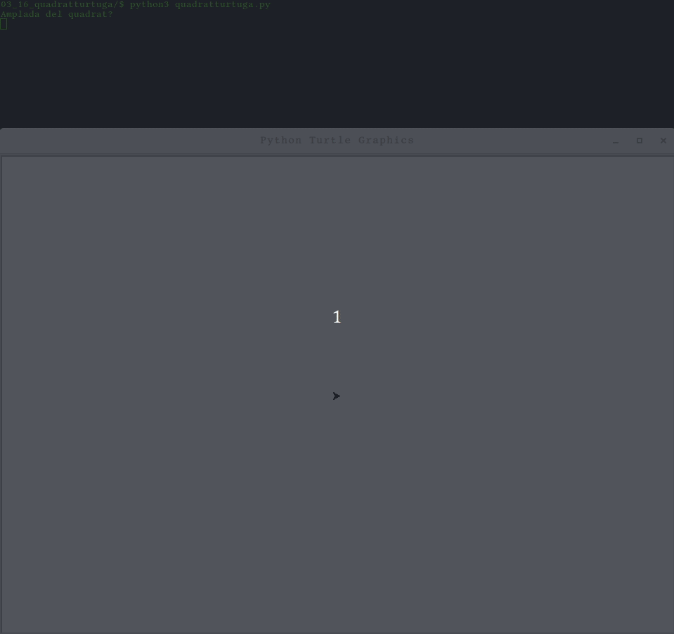
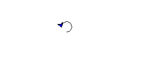

Iteracions numèriques¶
Python ens ofereix l’estructura for per implementar recorreguts.
Veiem-lo en acció amb l’exemple de mostrar els primers 10 números naturals:
# Primers deu nombres naturals
for i in range(1, 11, 1):
print(i)
- Fixat què el rang de valors s’explicita amb la paraula range i, entre
parèntesis, indiquem:
el valor inicial, en aquest cas 1
el primer valor fora de rang. Com que volem fins el 10, el primer fora de rang és 11.
l’increment a cada iteració. En aquest cas anirem d’un en un.
Altres exemples:
# Primers cinc nombres parells
for i in range(1, 11, 2): # 2, 4, 6, 8, 10
print(i)
En el cas dels decrements, farem:
# Primers cinc nombres parells en ordre decreixen
for i in range(10, 0, -2): # 10, 8, 6, 4, 2
print(i)
Fixa’t que el límit final és 0 doncs és el valor següent a l’últim que
ens interessa.
Exercici 4. Primers cent naturals¶
Desenvolupa un programa que escrigui els primers 100 nombres naturals en ordre creixent (un número per línia).
Nota: no afegeixis cap simulació, ni fitxers de comprovació d’entrada sortida, ni doctest.
Comprova que la sortida comença amb el valor 0, tot seguit ve 1 i així, arriba al darrer
99.
Si el darrer és 100, no has fet el que es demana!
Exercici 5. ☞ Entre dos nombres¶
Desenvolupa un programa que demani dos números a l’usuari i escrigui tots els números entre el primer i el segon, començant pel primer i acabant pel segon.
No cal que creis cap funció ni afegeixis doctest però sí passar les
proves de la carpeta 03_05_entredosnombres que esperen que el teu
programa es digui entredosnombres.py.
Exercici 6. Entre dos nombres (re-loaded)¶
Tornem a considerar el programa entredosnombres.py. Farem una nova
versió. Aquest cop sí farem el mecanisme de doctest. De regal t’ofereixo
el primer, però caldrà que afegeixis com a mínim dos casos més. Mira els
fitxers de prova de l’exercici anterior, si et cal inspiració.
>>> entre_dos_nombres(3, 6)
'3 4 5 6 '
Per fer-ho, necessitarem poder concatenar els diferents valors del bucle
en un sol string que retornarà la funció entre_dos_nombres(inici,
final). Aquesta funció rebrà els dos valors numèrics que marquen l’inici
i el final dels nombres a mostrar.
Fixa’t que el resultat és diferent al que havíem fet a la versió anterior. Per simplificar la prova, en comptes de retornar els números en una línia cadascún, els separem amb un espai. Per aquesta raó, no ens serviran les proves que ja tenim de la versió anterior.
Nota
Ampliació
T’atreveixes a crear una còpia dels fitxers de prova de la versió anterior, de manera que aquesta versió també passi aquestes proves?
Exercici 7. Entre dos nombres (re-loaded again!)¶
Tornem a considerar la funció entre_dos_nombres() del problema anterior.
Aquest cop, eliminarem l’espai final que apareix a la sortida. Considera el següent doctest:
>>> entre_dos_nombres(3, 6)
'3 4 5 6'
Nota
Ampliació
Si et vas atrevir a fer l’ampliació anterior, aquesta encara et semblarà més fàcil.
Modifica els fitxers de prova de la versió anterior i fes que comprovin la nova funcionalitat.
Exercici 8. Suma fins un nombre¶
Desenvolupa un programa que demani un número i escrigui la suma de tots els números entre l’introduït i el 1.
Et proposo les següents proves en doctest:
>>> suma_fins_un_nombre(4)
'1 + 2 + 3 + 4 = 10'
>>> suma_fins_un_nombre(1)
'1'
>>> suma_fins_un_nombre(0)
'error'
>>> suma_fins_un_nombre(-1)
'error'
Fixa’t que si s’introdueix 1, la sortida no mostra una suma. A més, el valor 0 i els negatius generan un error.
Exercici 9. ☞ Històric d’edats¶
Desenvolupa un programa que demani el nom de l’usuari, l’edat i l’any actual. El programa escriurà l’edat que tenia l’usuari a cada any des del seu naixement i s’acomiadarà.
L’aplicació no li dirà l’edat que té l’usuàri en l’any actual, donat que aquesta dada forma part de l’entrada. Per exemple, si l’usuària ha nascut aquest any, simplement s’acomiadarà, i si ho va fer l’any passat, només dirà quan va néixer i s’acomiadarà.
Per altra banda, caldrà realitzar algunes comprovacions a l’entrada. Les comprovacions requerides són:
que el nom no estigui buit
pista: sabem que és buit si el nom introduït és igual a
''que l’edat sigui un valor positiu (es pressuposa que serà enter)
que l’any sigui com a mínim 1971 (també es pressuposa enter)
En cas d’error, sempre retornarà el mateix missatge: Entrada errònia
En aquest exercici no cal fer doctest.
Passa les proves de 03_09_historicedats/ que espera que el teu
programa es digui historicedats.py.
Exercici 10. ☆ Un quadrat de nombres¶
Escriu un programa que demani un enter positiu més gran que 0 i «dibuixi» un quadrat amb els nombres del 1 fins el valor de l’entrada. Per exemple, si l’entrada és 5, dibuixarà:
1 2 3 4 5
1 2 3 4 5
1 2 3 4 5
1 2 3 4 5
1 2 3 4 5
En cas que l’entrada sigui menor que 1, el programa mostrarà un missatge d’error adequat.
En cas que et vulguis estalviar concatenar els diferents valors de cada línia, pots fer servir el següent truc
print("Gui", end='')
print("do")
Que en executar-ho resultarà en:
Guido
En aquest exercici no cal fer doctest però sí fitxers externs de
comprovació. Les comprovacions seran, com a mínim, per les entrades:
0, 1 i 5.
Així, l’exercici presentarà els següents fitxers:
03_10_quadratdenombres/quadratdenombres.pyEl teu programa
03_10_quadratdenombres/test/testfile1.txtConté el valor 0
03_10_quadratdenombres/test/expected1.txtConté tota la sortida corresponent al teu programa quan rep el valor 0 (inclou el missatge d’error)
Dins de
test/hi apareixerà untestfile?.txtper les entrades1i2, i els seus corresponentsexpected?.txt.A Dins de
test/realitza també les següents comandes:$ cp ../../03_09_historicedats/test/test.sh . $ echo quadratdenombres.py > programname
Aquestes dues comandes rescaten el script de proves i configuren el nom del fitxer a provar.
Assegura’t que el teu programa passa les tres proves que has creat.
Nota: evidentment s’espera que no ho facis amb instruccions de l’estil
print("1 2 3 4 5")
Exercici 11. Un triangle de nombres¶
Desenvolupa un programa que demani a l’usuari un nombre positiu més
gran que 0. El programa escriurà una línia per nombre entre el 1 i el
nombre introduït (es a dir, creixentment). A cada línia escriurà tots
els nombres des del nombre corresponent a la línia fins al 1. Ex. si
l’entrada és 5 la sortida serà
1
2, 1
3, 2, 1
4, 3, 2, 1
5, 4, 3, 2, 1
En aquest exercici no cal fer doctest. Fes, però, tres proves externes
com les de l’exercici anterior, dins de 03_11_trianglenombres sobre
trianglenombres.py.
Exercici 12. Un triangle invertit¶
Desenvolupa un programa que demani a l’usuari un nombre positiu més
gran que 0. El programa escriurà una línia per nombre entre el nombre
introduït i el 1 (és a dir, decreixentment). A cada línia escriurà
tots els nombres des de l’1 fins el nombre corresponent a la línia.
Ex. si l’entrada és 5 la sortida serà
1, 2, 3, 4, 5
1, 2, 3, 4
1, 2, 3
1, 2
1
En aquest exercici no cal fer doctest. Fes, però, tres proves externes
com les de l’exercici anterior, dins de 03_12_triangleinvertit sobre
triangleinvertit.py.
Exercici 13. Triangles¶
Desenvolupa un programa que demani un nombre enter positiu i dibuixi tants triangles com se li indiqui.
$ python3 triangles.py
quants?
2
.........9.........
........898........
.......78987.......
......6789876......
.....567898765.....
....45678987654....
...3456789876543...
..234567898765432..
.12345678987654321.
0123456789876543210
.........9.........
........898........
.......78987.......
......6789876......
.....567898765.....
....45678987654....
...3456789876543...
..234567898765432..
.12345678987654321.
0123456789876543210
En aquest exercici no cal fer doctest. Fes, però, tres proves externes
amb valors d’entrada 0, 1 i 2, dins de 03_13_triangles.
Exercici 14. Rombos¶
Desenvolupa un programa anomenat rombos.py que
que demani un nombre enter positiu i dibuixi tants
rombos com se li indiqui:
$ python3 rombos.py
quants?
2
.........9.........
........898........
.......78987.......
......6789876......
.....567898765.....
....45678987654....
...3456789876543...
..234567898765432..
.12345678987654321.
0123456789876543210
.12345678987654321.
..234567898765432..
...3456789876543...
....45678987654....
.....567898765.....
......6789876......
.......78987.......
........898........
.........9.........
.........9.........
........898........
.......78987.......
......6789876......
.....567898765.....
....45678987654....
...3456789876543...
..234567898765432..
.12345678987654321.
0123456789876543210
.12345678987654321.
..234567898765432..
...3456789876543...
....45678987654....
.....567898765.....
......6789876......
.......78987.......
........898........
.........9.........
En aquest exercici no cal fer doctest. Fes, però, tres proves externes amb
valors d’entrada 0, 1 i 2, dins de 03_14_rombos.
Exercici 15. ☼ Mega triangle “Trilal”¶
Desenvolupa un programa que composi la següent forma
...................9...................
..................898..................
.................78987.................
................6789876................
...............567898765...............
..............45678987654..............
.............3456789876543.............
............234567898765432............
...........12345678987654321...........
..........0123456789876543210..........
.........9...................9.........
........898.................898........
.......78987...............78987.......
......6789876.............6789876......
.....567898765...........567898765.....
....45678987654.........45678987654....
...3456789876543.......3456789876543...
..234567898765432.....234567898765432..
.12345678987654321...12345678987654321.
0123456789876543210.0123456789876543210
Exercici 16. ☼ Un quadrat de cercles¶
En aquest exercici farem que la nostra tortuga ens dibuixi les formes a base de cercles.
Desenvolupa un programa que demani l’amplada d’un quadrat i el radi dels cercles. A partir d’aquestes dades, fes que una tortuga dibuixi un quadrat a base de cercles amb el radi indicat i separats entre si quatre cops el radi.
La interacció esperada vindria a ser quelcom similar a:
Vinga, que et dono una pista: el següent codi dibuixa un triangle senzillet amb cercles:
"""
Dibuixa tres cercles formant un triangle
"""
import turtle
t = turtle.Pen()
# color d'emplenat
t.fillcolor('blue')
radi = 10
# primer cercle
t.begin_fill() # per que comenci l'àrea a emplenar
t.circle(radi)
t.end_fill() # per que empleni
# desplacem al costat
t.penup() # per que no dibuixi
t.forward(radi * 4) # desplacem quatre cops el radi
# segon cercle
t.pendown() # per que dibuixi
t.begin_fill()
t.circle(radi)
t.end_fill()
# salt de línia
t.penup()
t.back(radi * 4) # enrera el desplaçat
t.right(90)
t.forward(radi * 4)
t.left(90)
# darrer cercle
t.pendown() # per que dibuixi
t.begin_fill()
t.circle(radi)
t.end_fill()
input()
El dibuix resultant és:
Exercici 17. ☼ El teu repte amb formes¶
T’has quedat amb les ganes de definir una forma? És la teva oportunitat d’impressionar els teus companys i, encara millor, a tu mateix/mateixa!
Et proposo que construeixis la solució en forma d’exercici, amb el seu enunciat i els jocs de prova, tal i com si fos un exercici més dels que has vist anteriorment. Si resulta interessant, podria ser que el trobis afegit a aquests apunts associat amb el teu nom!